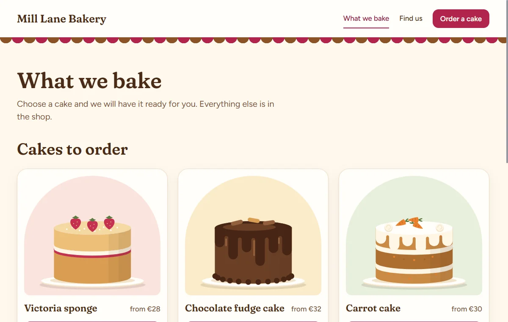
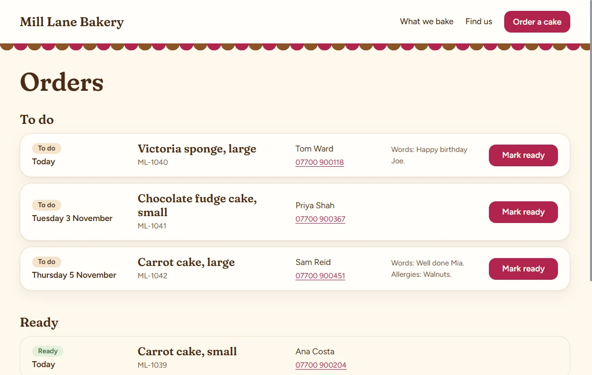

What you'll make
You're going to pretend you run Mill Lane Bakery, a small bakery that doesn't exist. You want a small website. People should be able to see what you bake, order a cake for pick-up, and find your opening hours and address. Your staff should be able to see the orders and mark them ready.
By the end, you'll have the plan for that website, and a prototype that looks and clicks like the real thing:


What's a specification?
A specification is the plan for a piece of software: what it must do and why. Think of an architect's plans. They don't build the house, but they make sure everyone means the same house.
Here's what you'll have at the end:
| You'll have | How many | What it is |
|---|---|---|
| Goals | 2 | What should get better for the bakery |
| Requirements | 9 | What the website must do, with checks |
| Flows | 4 | Journeys someone takes through the site |
| Screens | 5 | Each page, described and drawn |
| Components | 6 | Parts shared between screens, such as the button |
| Design system | 10 rules | The look, written down, with 157 values |
| Prototype | 5 screens | All of it working, at phone and desktop size |
The one idea
Normally a specification is a long document, and a fact gets repeated in many places. Change it once and the other copies go on being wrong.
This skill keeps it like a string board: each fact on one note, with strings between the notes that depend on each other. Change a note, follow the strings, and you know what to check. Here's a party on such a board. The guests went from 30 to 50, and the board found that the hall only holds 40.